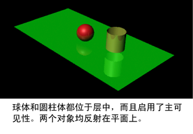
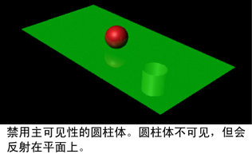

注： 提供的
新渲染设置系统现已取代传统渲染层，是 Maya 中的
默认系统。这种新方法可简化复杂场景的管理以便进行渲染，如今已成为建议的工作流。有关详细信息，请参见
Maya 渲染设置。
您可能希望拥有一个只包含对象的反射和折射的渲染层，但使该对象在该层上不可见。“渲染统计信息”(Render Stats)中的主可见性属性允许对象反射和折射，但对象本身不渲染。
为此，可见对象和隐藏对象（要显示其反射和折射的对象）必须属于同一层。
隐藏对象但显示其反射和折射
- 选择“窗口 > 渲染编辑器 > 渲染层编辑器”(Window > Rendering Editors > Render Layer Editor)。
- 在渲染层编辑器窗口中，选择要在其上隐藏对象的层。
- 选择对象。将显示包含选定对象的属性的“属性编辑器”(Attribute Editor)。
- 取消选中对象的形状节点的“渲染统计信息”(Render Stats)区域中的“主可见性”(Primary Visibility)。“主可见性”(Primary Visibility)属性将变为橙色，指示覆盖了该层上的可见性。

